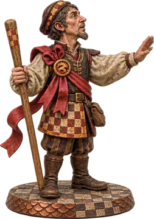

Дракон уходит на покой
Карты и фигурки ведущего
Игровой комплект
3 игрока · 4 игрока · 5 игроков · 6 игроков · 7 игроков · 8 игроков
Карта кампании

Поля боя


Герои


Персонажи ведущего


Противники
 Репейный воришка 3Репейный воришка 6Репейный воришка 4Репейный воришка 5Репейный воришка 2Репейный воришка 1
Репейный воришка 3Репейный воришка 6Репейный воришка 4Репейный воришка 5Репейный воришка 2Репейный воришка 1 Самозваный охранник в жёлтом плаще 2Самозваный охранник в жёлтом плаще 4Самозваный охранник в жёлтом плаще 3Самозваный охранник в жёлтом плаще 1Самозваный охранник в жёлтом плаще 6Самозваный охранник в жёлтом плаще 5
Самозваный охранник в жёлтом плаще 2Самозваный охранник в жёлтом плаще 4Самозваный охранник в жёлтом плаще 3Самозваный охранник в жёлтом плаще 1Самозваный охранник в жёлтом плаще 6Самозваный охранник в жёлтом плаще 5

Распорядитель с расписным жезлом 1Распорядитель с расписным жезлом 2Распорядитель с расписным жезлом 5Распорядитель с расписным жезлом 4Распорядитель с расписным жезлом 6Распорядитель с расписным жезлом 3